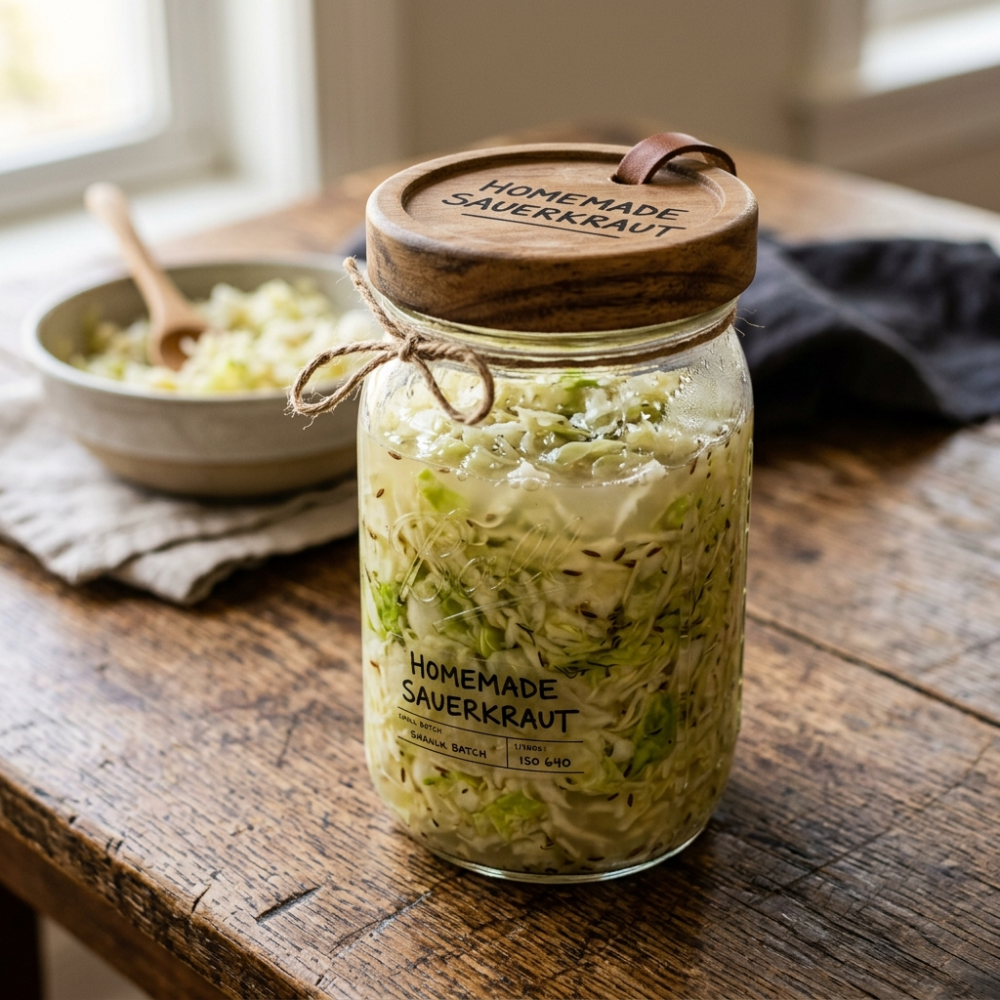
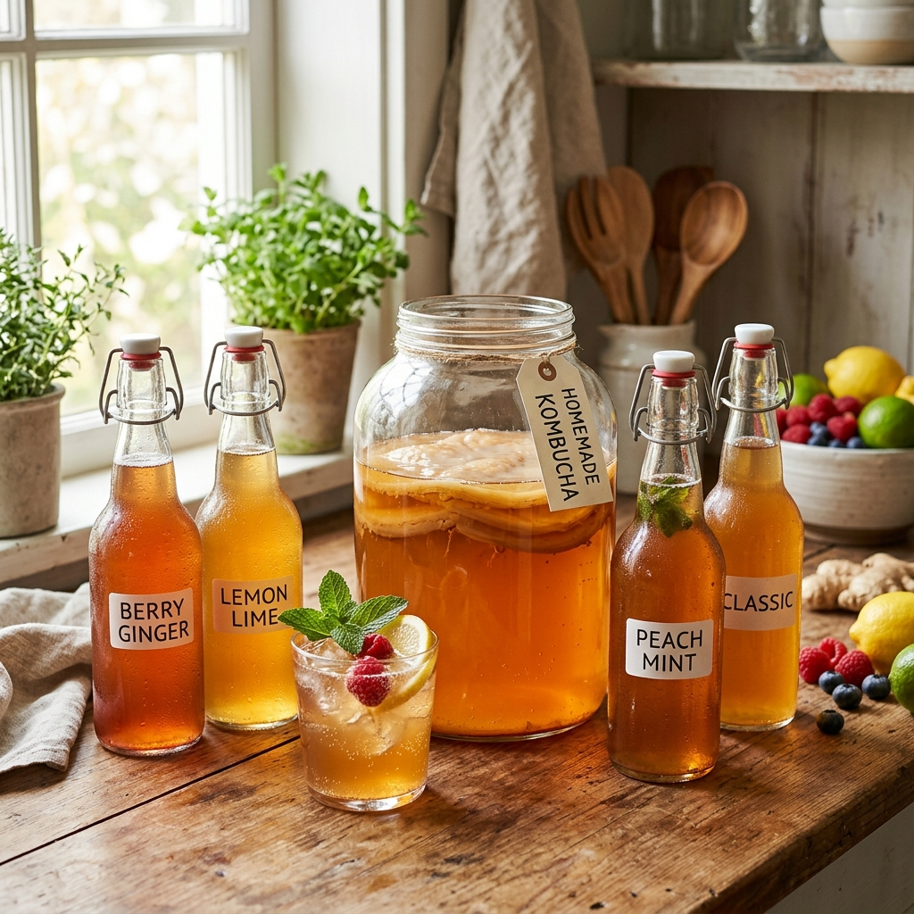
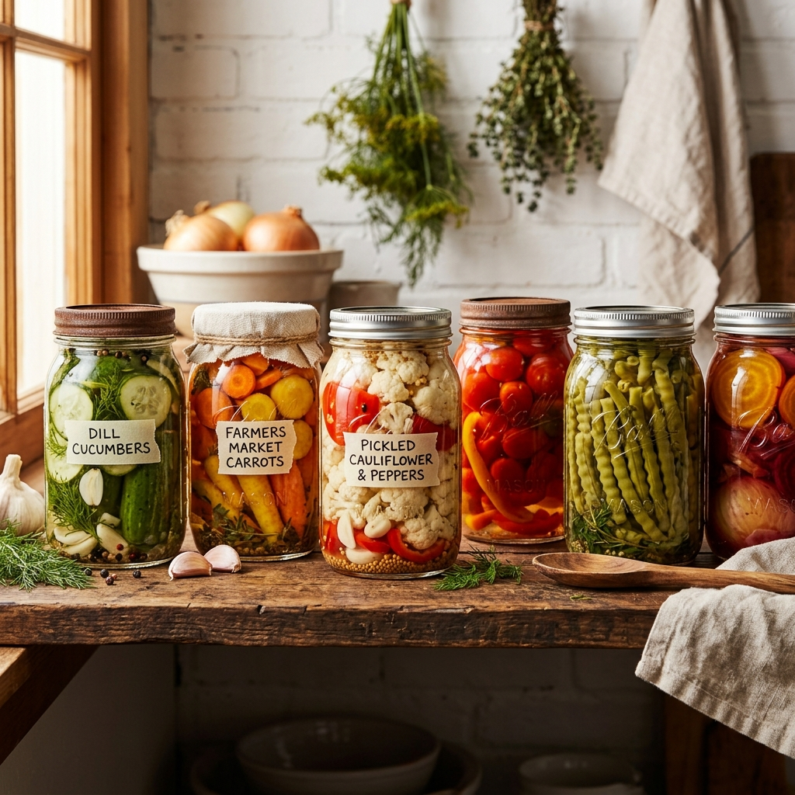
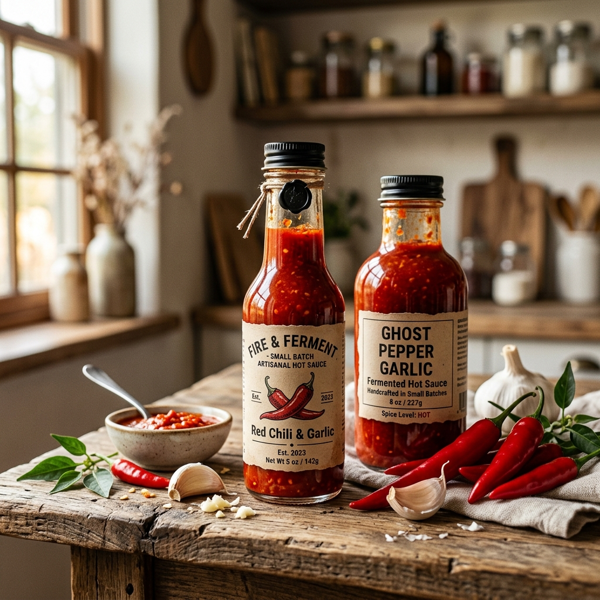
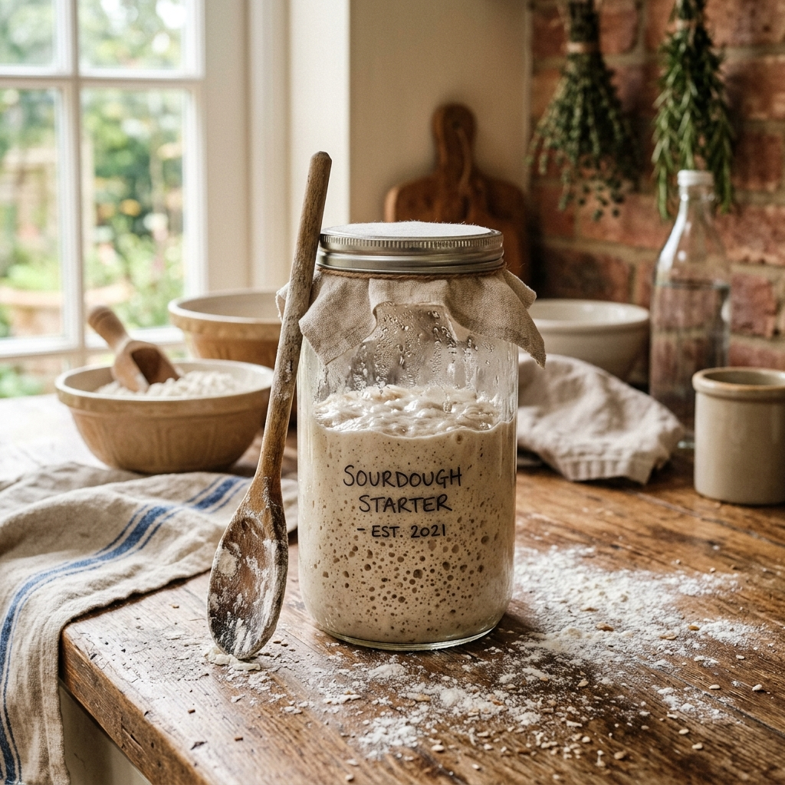

Hands-on classes taught by expert artisans. From beginner to advanced, find the perfect workshop for your fermentation journey.

Learn proper salt ratios, packing techniques, and flavor variations. Includes take-home jar and culture starter.
Authentic napa cabbage and radish kimchi. Learn traditional paste making, aging techniques, and flavor layering.

SCOBY care, first and second fermentation, carbonation science, and artisan flavor infusion mastery.

Go beyond cucumbers. Pickle beets, carrots, cauliflower, and eggs using brine fermentation and vinegar methods.

Create your own artisan hot sauce using lacto-fermentation. Learn pepper selection, mash ratios, and bottling.

Build and maintain your own sourdough starter from scratch. Learn feeding schedules, hydration ratios, and baking basics.
Understanding the stages of fermentation helps you create consistently delicious results.
Every workshop enrollment includes a premium physical supply kit shipped to you beforehand, or prepared at your table.
Looking for a unique hands-on group activity? Host a private pickling party or probiotic workshop for your team, family, or friends. Available in-person or virtually.
Inquire About Private EventsDon't worry — even experts encounter these. Here's how to diagnose and fix common problems.